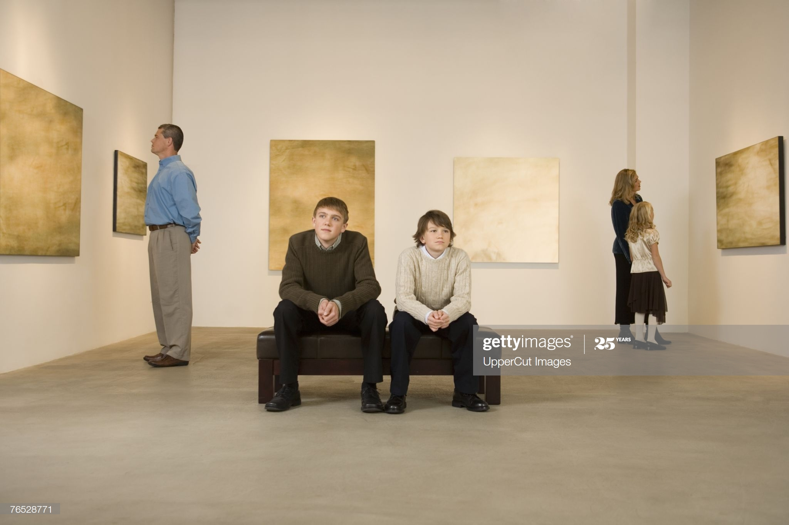

BEAUTY OF NATURE


When I am working on a problem, I never think about beauty. I think only how to solve problem,
But when I have finished, if the solution is not beautiful, I know it is wrong.
Beauty is subjective. We can find it in nature, in the souls and faces of our loved ones,
or even in life’s mundane tasks.
Regardless of where we find it, people are naturally drawn to beautiful.
Below you’ll find a curated collection of wise, inspirational and humorous beauty sayings, proverbs,
and quotes.
When I am working on a problem, I never think about beauty.
I think only how to solve the problem. But when I have finished,
if the solution is not beautiful, I know it is wrong.